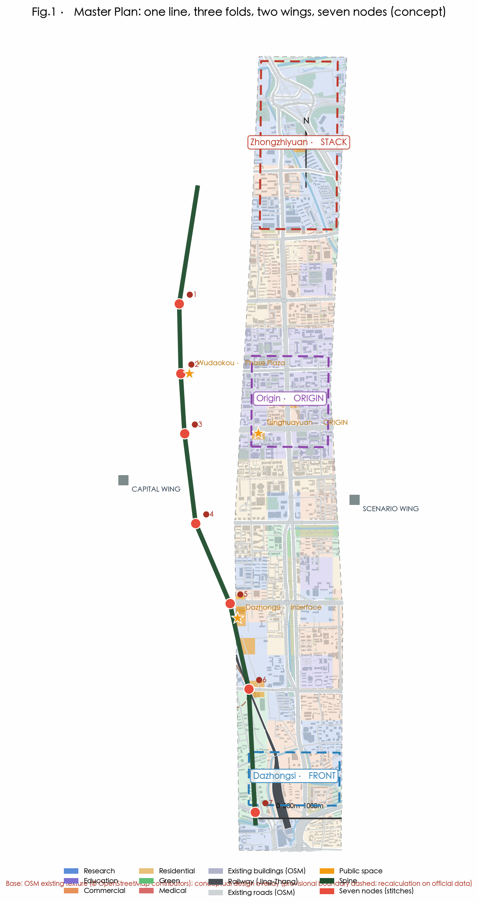
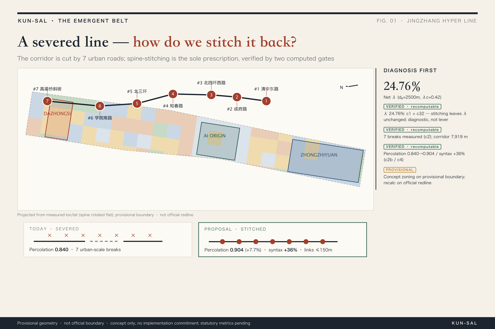
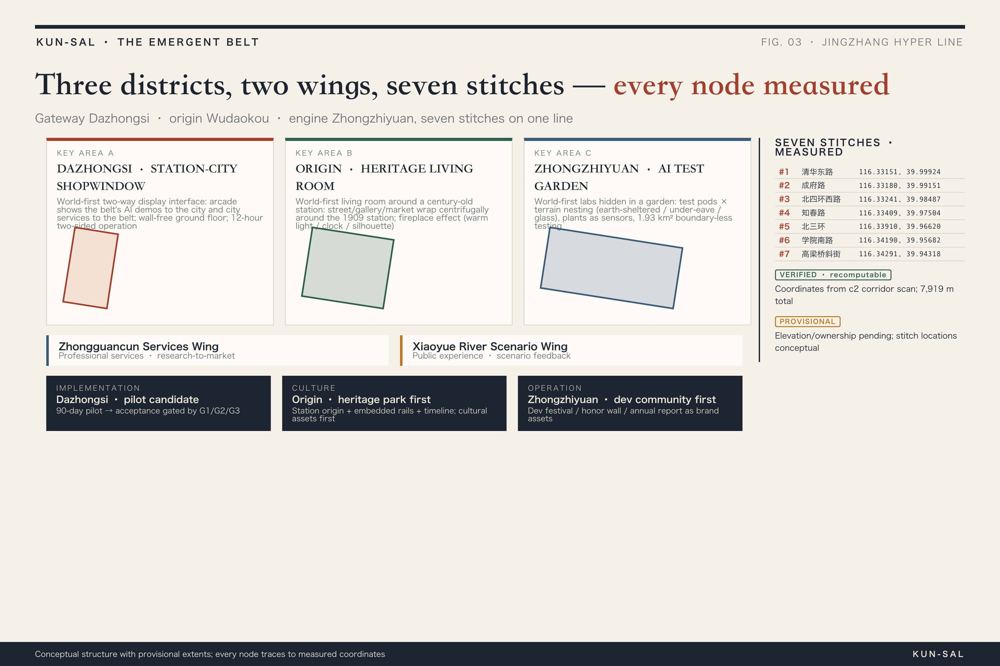
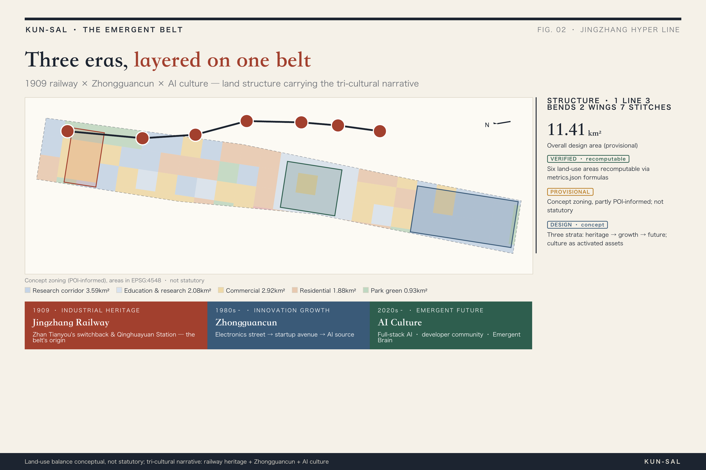
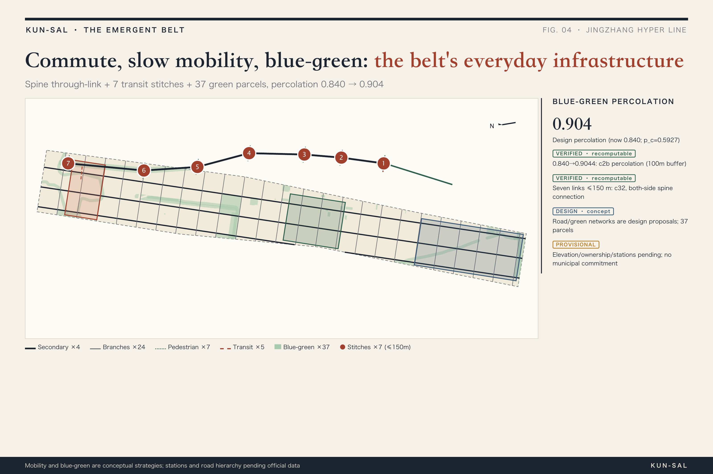
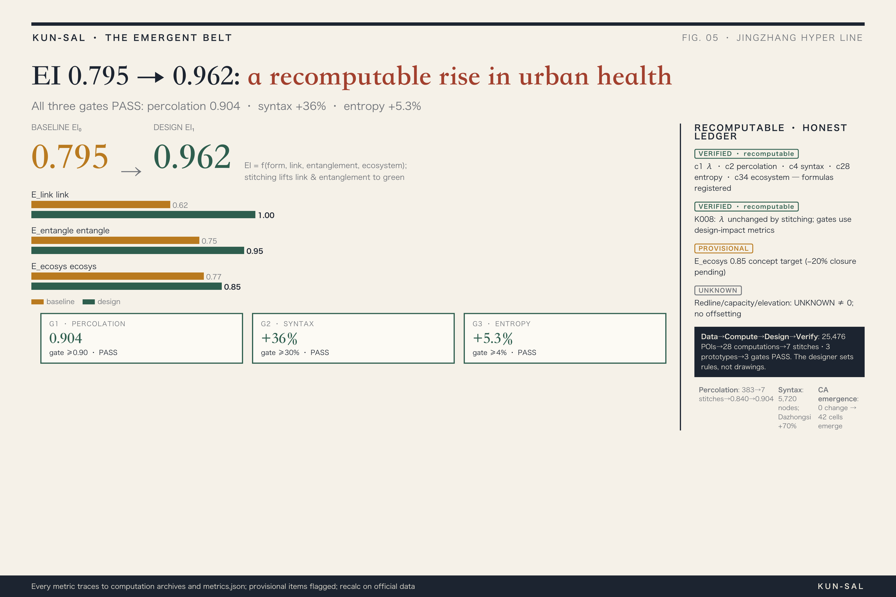

1 · Overview: one line, three folds, two wings, seven nodes


Note: provisional boundaries are dashed lines only, never official redlines; all spatial proposals are conceptual recommendations.
2 · Three-layer urban-design frame (this is URBAN DESIGN: architecture + blocks + plazas + landscape)
| Layer | Scale | Urban-design body | This proposal |
|---|---|---|---|
| Macro | belt 11.4 km² | structure / land use / intensity-height / character / mobility / blue-green | one-line-three-folds-two-wings-seven-nodes, POI zoning, A5 intensity-height, road network + 7 rail stations, percolation 0.904, dual skyline |
| Meso | block 120×120m | block module / buildings / street interface / public-space network | live-work mixed towers (20% housing in office-led / 15% office in housing-led), block module (towers + podium + courtyard), street walls, 3.2m walkway + 40×40 courtyard |
| Micro | place scale | plazas / landmarks / landscape / follies / interiors | three pilgrimage landmarks, seven stitches, three landscape boards, nine study boards |


Node design concept statements (concept first)
| Node | Concept | Form | Atmosphere |
|---|---|---|---|
| Phase Plaza | A breathing silver screen — the wind directs, scales are pixels, the plaza is a theater | pole canopy fills the frame | blue hour: backlit silver + copper rim |
| Quantum Garden | An industrial greenhouse of memory — a test garden grows inside the old factory's skeleton | 768 trusses = greenhouse frame | dusk: cold blue × warm gold |
| Origin Plaza | A TIME AXIS: flush sleepers = timestamps, glowing seams = circuit traces | flush sleepers + light seams + steel inlay | morning shadows; a glowing timeline at night |
| Interface Plaza | The bell sinks into the ground — the old bell's shadow is the AI bell face | copper bell lines + sound-pipe slope | blue hour + last daylight |
| Railside Market | Improvisation in a thousand profiles — no cutting, no drilling | aluminum-profile structure forest | matte aluminum + warm stall lamps |
| Stitch Bridge | An arc of white light across the traffic — white concrete + steel + glass | 3-span white box girder + glass balustrade | blue dusk backlight: the white bridge glows |
| 1733 Light Interface | Keep the shell, free the inside — the old mall's shell holds the night school's lamps | lit-window rhythm + loft steel | dark facade × warm gold windows |
3 · Three-level scope and key areas
Research 43.6 km² → Design 11.4 km² → Key areas 368.4 ha (Zhongzhiyuan 192.1 / Origin 104.3 / Dazhongsi 72.0 ha)

Structural alignment with the approved district plan (HD00-1601 etc., publicized 2024-12-20, approved 2026-08-11): the Hyper Line spine = the plan's "one belt" plus our AI function layer; Wudaokou / Dazhongsi = the "two centers"; the seven stitches = reinforcement of the "multiple points". Statutory values remain unknown — structure aligned, numbers not overstepped.
4 · Land use and building renewal
Conceptual partition from a 400m grid plus Amap POI character: research 31.5% / commercial 25.6% / education 18.2% / residential 16.5% / green 8.2%. c33 capacity check: 67 cells absorbed / 11 new-build (446,000 m², FAR≈0.91) / 13 over-standard — new build is only 1.9% of the plan's 2035 total (23.693M m²).

5a · 方案视频（69 秒）
诊断→概念→效果图→验证：把约束变成创造（含配乐；静帧合成，非实景承诺）
5 · Node design studies (one page, four cells: premise → translation → construction → use)


5b · 三维漫游（拖动旋转 · 离线伪 3D）
鼠标按住拖动旋转（松手自动旋转）；三个对象：120×120 街区模块 / 相变广场千鳞树阵 / 主脊平嵌步道。预渲染 24 视角序列，纯本地无外部库。
120×120 街区：24m 裙房街道墙 + 60–80m 塔楼退后 + 40×40 内院
6 · Rendering gallery (AI concept intents, not implementation; each bound to an anchor card)


7 · Anchor cards (renderings must match the site; no unanchored scenes)


8 · Mobility and blue-green public space

Blue-green giant component 83.9% (above the 59.27% threshold) → 86.5% after stitching; integration gains: Dazhongsi +70%, Beijing North +49%, Wudaokou +43%, Zhichunlu +24% (computed). Spine = flush-embedded rail construction (Fact F1); seven connectors ≤150m both sides; 7 rail stations.
9 · AI scenario cards and pilgrimage landmarks
Three pilgrimage landmarks: ① Tsinghuayuan · ORIGIN (time-axis name field: flush sleepers + light seams + steel inlay) | ② Wudaokou · Phase-Transition Plaza (Thousand-Scale Grove: wind flips scales like starling murmurations — physical emergence, no light pillars, no screens; the λ strip is the only information layer) | ③ Dazhongsi · Interface Plaza (acoustic slope + copper bell lines + temple emptiness)
Ten scenario cards include 4 industrial test/validation scenarios; every card maps to space, users, data boundaries, human review and operators; privacy-invasive scenarios are excluded; every card names an AI-free equivalent path.
10 · Core metrics · task coverage · self-check

Task coverage: all announcement clauses 1.3/1.4/1.5 and agent.1–6 are registered in the compliance matrix; 11 standards and 15 depth items are complete.
Self-check status: This package passed: deterministic validation / spatial review (only 3 provisional notices) / visual packaging (0 issues) / professional evidence review; visual metrics match metrics.json.
Pending official data: official redlines, regulatory FAR/height/density/setback, heritage ranges, existing buildings and ownership, municipal pipelines — the whole package will be recalculated when released.
11 · Sources and assumptions
- Official announcement (Haidian Branch, 2026-05-09) and cleared agent task book
- Haidian government releases 2026-03-30 / 2026-07-29; Beijing Daily 2026-08-07
- Approved district plan HD00-1601 (publicized 2024-12-20, approved 2026-08-11)
- Amap POI 12 categories, 25,476 points (2026-08-15 snapshot)
- OSM existing conditions (ODbL, © OpenStreetMap contributors)
- 10 creation-intent references (public notes) + 15 rendering references (atmosphere only, originals not included)
- KUN-SAL CASA/Batty methodology; all 28 computations run locally with a single-source registry
Note: provisional boundaries are dashed lines only, never official redlines; all spatial proposals are conceptual recommendations.